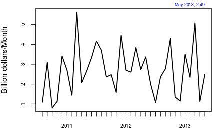

India Inc hedges its bets
Financial Express, 16th August 2013
Indian companies have borrowed heavily abroad, attracted by low interest rates. It is feared that a depreciation of the rupee will hurt corporate balance sheets adversely and make the economic situation worse. Measurement of firm currency exposure shows that, fortunately, this is not the case. All large and medium sized Indian companies, who are usually the ones who borrow in dollars, expected rupee depreciation. Most of them have hedged their currency exposure. This is not surprising considering the large current account deficit, the slowing economy, higher inflation and the expected increase in US interest rates coupled with the last few years of RBI's policy of not intervening in the rupee-dollar market.
Some exporters have a natural currency hedge when they borrow, some companies chose not to borrow abroad, while still others hedged in the derivatives markets. This behaviour is perfectly rational. If a depreciation was expected, it made little sense for a company to take a dollar loan, even if it was cheaper, whose payment would become more difficult in a couple of years.
Table 1:
Gain from Appreciation Neutral Gain from Depreciation 2002-2004 300 1539 17 2011-2013 0 1201 81
Source: Author's calculationsTable 2:
Firms borrowing abroad (March 2012) Total number of firms: 8382 Firms borrowing abroad: 843 Amount borrowed abroad: USD 236.66 billion
Source: Prowess, CMIE.The data for firms borrowing abroad is available in the CMIE prowess data base. We see that in March 2012, out of 8,382 companies, only 843 companies, or 10% of all Indian firms, borrowed abroad. The data suggests that today also the figure should be roughly the same. However, exposure may arise in many other ways as well. For example, if a firm imports raw materials, but cannot pass on the increase in costs, its profit margins would decline.
Figure 1: External commercial borrowings (per month)
 Hence we measure unhedged currency exposure of Indian firms. This measure uses an analysis involving daily stock market and currency data and, therefore, can be estimated till end July 2013. It measures whether the company loses or gains in value when the rupee-dollar rate moves, or the average impact of a 1% currency depreciation on the stock price. If the firm has hedged, then the stock price does not gain or lose value when the currency moves. We measure exposure for 1,282 of the listed firms that have fairly adequate liquidity.
First, we look back at the 2002-04 period. Here, there was large-scale trading by RBI on the currency market aiming to prevent rupee appreciation. Most market participants expected the rupee to appreciate. At this time, it was advantageous for firms to set themselves up to profit from the expected future appreciation by invoicing in rupees, hedging export proceeds, leaving imports unhedged, borrowing in dollars, etc. Our analysis shows that there were 300 large firms who had positioned themselves to gain from appreciation. There were 1,539 firms who did not have a statistically significant exposure. There were only 17 firms who did not expect an appreciation and would be hurt by it.
If, in that situation, a sudden and unexpected depreciation had taken place, it would have generated a substantial adverse impact upon these 300 firms who were betting on appreciation.
Then we turn to the latest two years ending in July 2013. Our analysis shows that there are no firms who have set themselves up to gain from appreciation. There are 1,201 firms who have no statistically significant exposure. There are 81 firms which stand to gain from depreciation. These are firms who would have invoiced in dollars, left exports unhedged, hedged imports, and not borrowed in dollars. Most firms were hedged. There was not a single firm who was expecting a rupee appreciation and took positions accordingly. The unhedged exposure, though little, is on the other side.
There is, of course, nothing really surprising in this. Few observers of the Indian economy were expecting a strong or stable currency. When the exchange rate is managed, firms have an incentive to throw caution to the winds. As long as the firm does not have to pay the hedging costs itself, it is always cheaper to borrow in dollars. In the past when the rupee-dollar exchange rate was kept stable, firms left their currency exposure unhedged.
This has two implications. First, firms take on more currency risk under a managed exchange rate. In 2002-04, there were 317 firms who were betting on exchange rate fluctuations. The floating exchange rate, which has prevailed from March 23, 2007, onwards, has induced fear in firms and fewer firms are leaving their currency exposure unhedged.
The second important implication is that at present rupee depreciation does not have an adverse impact for big and medium sized Indian firms that constitute the dataset. There are 81 firms who will actually gain from a large rupee depreciation. There are no firms who stand to lose from a rupee depreciation.
However, there are a large number of firms with interest rate exposure. These are firms who have borrowed domestically and expected an easing of monetary policy. These firms are much large in number. In fact, almost every firm has some borrowing. This borrowing is largely unhedged as there are few ways to hedge it in Indian markets today.
Monetary policy in an open economy involves making a choice between ensuring low currency volatility or ensuring low interest rate volatility. In both 2002-04 and in the last two weeks RBI intervened to provide low currency volatility. In this choice between currency volatility and interest rate volatility, most firms today would have a preference for higher currency volatility rather than interest rate volatility.
Looking forward, these episodes have important policy implications. Countries have experienced acute distress when a large part of the corporate sector had a certain bet (for example, betting on rupee depreciation) and things suddenly went the other way. It is good for India if firms are hedged. It makes the economy more resilient.
Back up to Ila Patnaik's media page
Back up to Ila Patnaik's home page